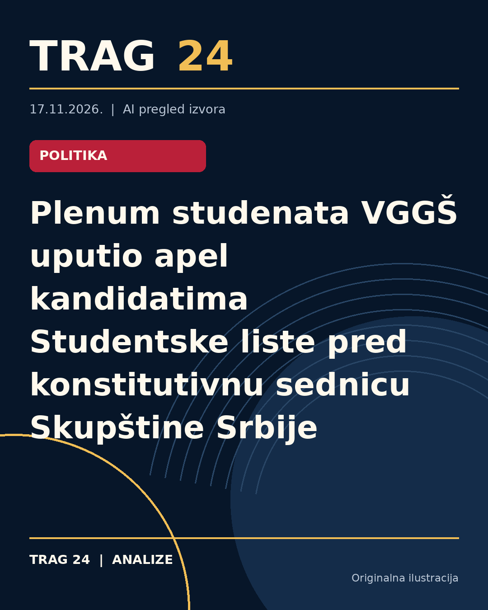

Plenum studenata VGGŠ uputio apel kandidatima Studentske liste pred konstitutivnu sednicu Skupštine Srbije

ŠTA SE DOGODILO
Plenum studenata beogradske Visoke građevinsko-geodetske škole (VGGŠ) uputio je javno pismo kandidatima Studentske liste uoči konstitutivne sednice Skupštine Srbije. U pismu su ih pozvali da postupaju u skladu sa vrednostima Studentskog pokreta i saznanjem o podršci naroda koji ih je izabrao na izborima održanim 25. oktobra.
HRONOLOGIJA
Javno pismo je objavljeno na društvenoj mreži X (bivši Twitter) večeras, dan pre konstitutivne sednice Skupštine Srbije. Studenti su naveli imena kandidata Studentske liste koji će sutra postati narodni poslanici, naglasivši ozbiljnost njihove odgovornosti i potrebu poštovanja zakona i Ustava Republike Srbije. Pismo je usledilo neposredno nakon izbora na kojima je Studentska lista dobila poverenje preko dva miliona glasača.
ŠTA NAVODE IZVORI
Iz dostupnih izvora - Nova.rs, Danas i N1 - prenose se identične informacije i citati iz javnog pisma Plenuma studenata VGGŠ. Studenti naglašavaju da su kandidati dobili poverenje 2.354.417 ljudi i pozivaju ih da budu svesni svoje odgovornosti, da poštuju zakon, kao i da svoju ulogu ne shvataju kao 'udobne fotelje'. Takođe, studenti podsećaju da promene vlasti predstavljaju suštinu demokratije i da kandidati treba da pokažu da zaslužuju podršku većine zemlje.
ŠTA JE POTVRĐENO
Potvrđeno je da je Plenum studenata VGGŠ javno uputio pismo kandidatima Studentske liste. Kandidati pomenuti u pismu osnovano ulaze u parlament kao izabrani predstavnici sa podrškom preko dva miliona građana. Jasno je da pismo ima za cilj da motiviše i podseti nove poslanike na odgovornost prema biračima i ustavnom sistemu Republike Srbije pre predstojeće konstitutivne sednice Skupštine.
ŠTA NIJE POTVRĐENO
Nije potvrđeno kako će kandidati Studentske liste konkretno reagovati na pismo Plenuma studenata VGGŠ niti koje konkretne mere ili odluke će doneti na prvoj sednici parlamenta. Takođe, ne postoji potvrda da li je pismo uticalo na druge aktere unutar Studentske liste ili politike Republike Srbije.
ŠTA OSTАJE OTVORENO: Ostaje otvoreno kako će se kandidati ponašati u daljem radu u parlamentu i da li će zaista slediti principe iznetih u javnom pismu. Takođe, nije poznato u kojoj meri će ova studentska inicijativa uticati na rad parlamenta i na širu političku scenu u Srbiji u narednom periodu.
Izvori
- https://nova.rs/vesti/politika/studenti-vggs-kandidatima-postupajte-u-duhu-studentskog-pokreta-i-naroda-koji-vas-je-izabrao/
- https://www.danas.rs/vesti/politika/studenti-vggs-kandidatima-postupajte-u-duhu-studentskog-pokreta-i-naroda-koji-vas-je-izabrao/
- https://n1info.rs/vesti/studenti-vggs-kandidatima-studentskog-pokreta-narod-vas-je-izabrao/
Ova analiza je pripremljena uz pomoć veštačke inteligencije na osnovu javno dostupnih izvora. Navodi izvora nisu nužno nezavisno potvrđeni.